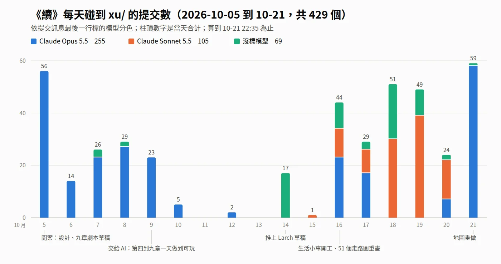
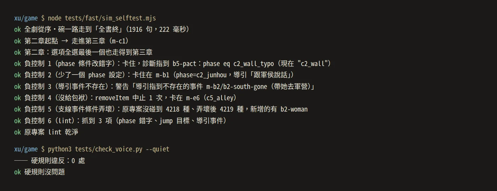
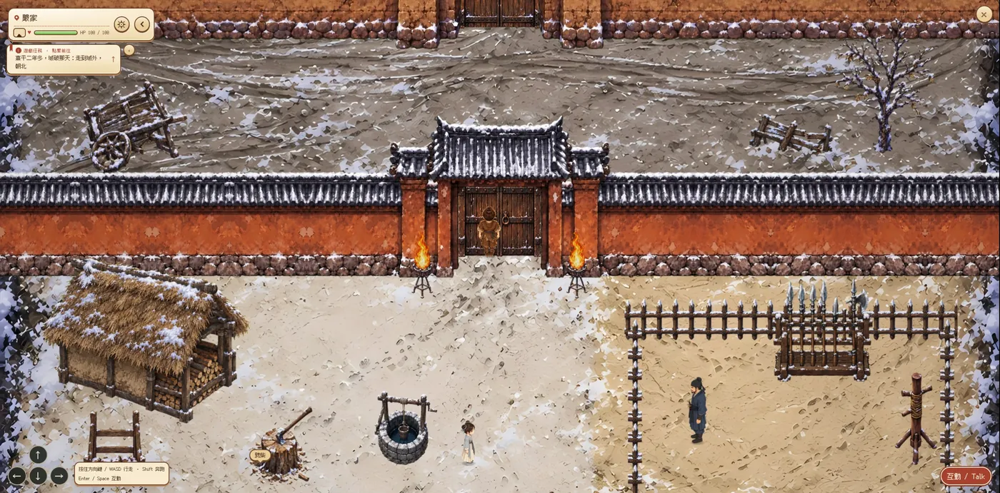
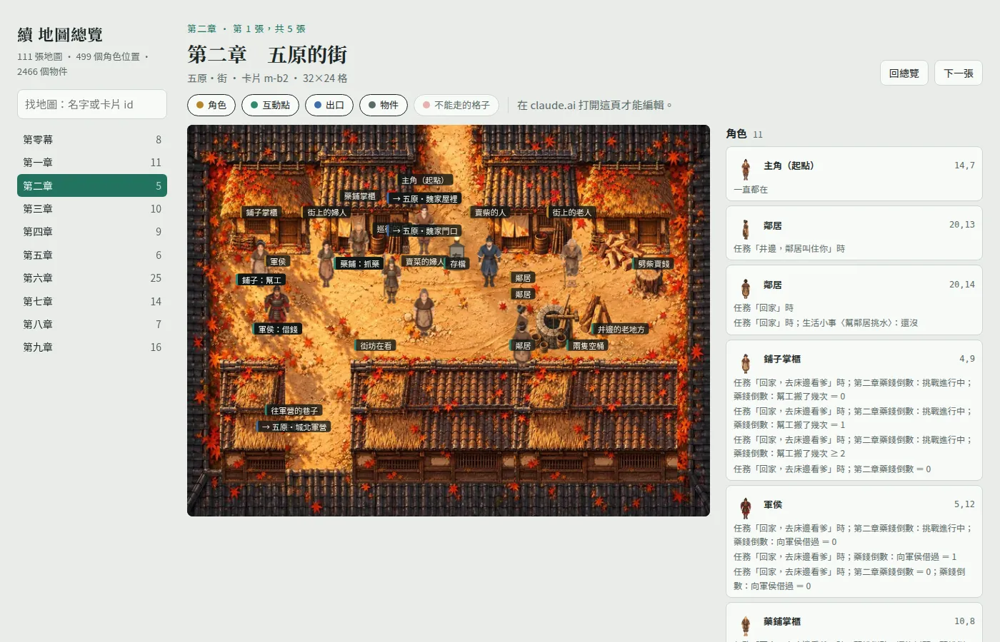
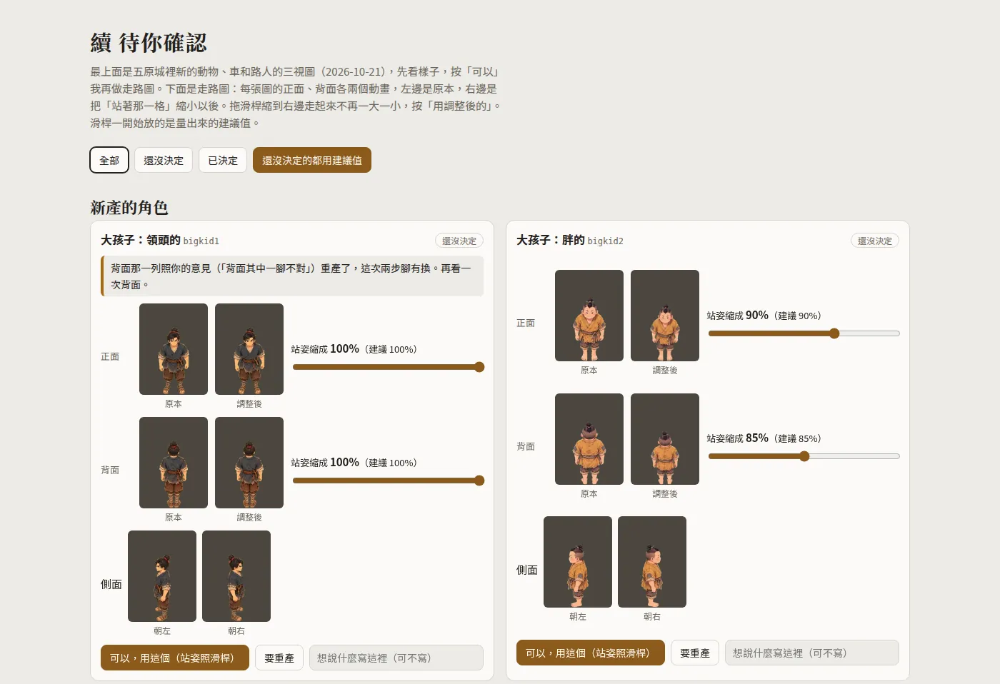

一個人跟 AI 怎麼做完一部 RPG
《續》從 2026-10-05 寫第一份設計草稿，到 10-21 第三次推上 Larch 草稿，前後十七天。我不寫程式，程式、產圖、量測、測試都是 AI 做的；我定方向、看圖、試玩、說哪裡不對。這一章講這樣分工實際怎麼跑：整部怎麼交出去、怎麼驗收、我的回饋怎麼變成修改和測試，還有推上 Larch 的規矩。想讓 AI 長時間自己做一個大專案的人，可以照著試。

2026-10-09：整部交出去
10-07 第一到三章已經能從頭玩到尾，10-08 我逐個角色審過走路圖，也確認了分層地圖的做法。2026-10-09 我跟 AI 說：
我想交給你全部自行處理到整部作品每章都完成、可以玩，等做到那個程度以後我再來完整玩一輪。……你應該也具備設定自動玩家可以負責玩，就不會出錯（或錯了容易發現，參考 TDD）測試保護。……這期間都是必須自行完成、自行決定的狀態。
AI 先寫了一份 xu/自主完成計畫.md，分四段：完成的定義、每章的做法、不做的事、決定紀錄。完成的定義第一條是整部從序玩到兩個結局都走得通；第二條是自動玩家要從序一路玩到結局最後一句，沒有頁面例外，每章的關鍵台詞、心聲、戰鬥、結局分支都要有斷言。不做的事寫了三件：不推 Larch、不發佈，要我按；不改劇本文字的內容；repo 有別人在寫，只 add 自己改的檔。
那一天的提交：
| 時間 | 提交 | 內容 |
|---|---|---|
| 04:55 | 1a43d17c |
自主完成的計畫與決定紀錄 |
| 06:44 | 4c1a6680 |
第四章〈赤兔〉可玩 |
| 08:36 | d83ff427 |
第五章〈這邊我顧著〉可玩 |
| 10:35 | 5b9df582 |
第六章〈地窖四年〉可玩 |
| 13:01 | ed6d75de |
第七章〈副將〉可玩 |
| 15:54 | 3cfe3a6c |
第八章〈門檻〉可玩 |
| 18:43 | 4296f225 |
第九章〈那碗水〉與喝、不喝兩個結局可玩，整部從序玩到全書終 |
晚上 AI 自己再打磨兩輪（玩法與演出、地圖與坐姿），10-10 凌晨兩點在 xu/進度.md 最上面寫好〈作者回來先看〉：play_all.mjs 從序玩到不喝結局全部通過，約 65 分鐘；這段期間替我做的決定都在〈決定紀錄〉；只有我能做的列了五件，例如寫「日子」那一句、親耳聽第八章的新曲（AI 請 Gemini 代聽過，代聽分不出古琴和吉他）。第四章以後我自己玩，是在 2026-10-20：用分章副本把第二到第九章玩了一輪，留了 135 則回饋。
替我做的決定，一列一列記下來
計畫裡有一段〈決定紀錄〉。原本要等我拍板的事，AI 自己決定，每個決定記一列：日期、章或範圍、決定、理由。10-09 那一版的表頭寫著「作者回來一次看、一次改」。到 10-18 一共 176 列，其中 132 列是 10-09 那一天記的。抽三列：
- 第四章第七幕：劇本要魏續坐在門檻上守夜，引擎沒有坐下的動作。決定：門檻做成站得上去，「坐下」用走上門檻、面朝外表示。後來〈待打磨〉裡補了坐姿的走路圖。
- 第四章第五幕：劇本寫帳前火把邊走不過去，照做就是一道看不見的牆，我 10-09 說過地圖不要有看不見的牆。決定：跟著布走到帳前兩個火盆之間，就接燈滅那一段。
- 第五章門檻：劇本要玩家自己聽出是不是赤兔。決定：馬蹄聲用程式合成，別的馬輕、遠、兩拍小跑過去；赤兔重、三拍，停在門口打一個響鼻。第一次劈柴一定是別的馬，理由寫的是「不隨機，測試與玩家都不會卡」。
劇本文字也標來源。2026-10-13 我授權 AI 把剩下的文字定稿：原本標（提案）的句子，核對過設計與正典改標（代理定），我先前確認過的保留（作者定），建置遊戲時兩種標記都剝掉。AI 補的設定另外列在 xu/補全清單.md，到 10-16 有 143 條等我審。
補設定會連帶出問題。2026-10-20 我問布的爹到底是城主還是帶隊的，AI 先前補的「守城的軍官」已經寫進好幾個地方，沒人回頭查。我說：「類似這種事你能主動修嗎，不要我提」。之後改一句設定，AI 先查正典 buchan/canon.md，再搜整個 xu/ 的劇本、補全清單、角色卡有沒有同一件事的別種說法，一次改到一致，回報查了哪裡、改了哪幾處、還有哪些要我拍板。
一包一包排進度
10-16 以後同時開工的 AI 變多，工作切成一包一包，每包一個代號：z0 是第零幕，a2、a3 是各章的小挑戰，sim 是邏輯模擬器，u1 到 u3 是玩家試玩問題修正，n12 是蟬與成素的新事件，fast2 是測試加速。做完多半交一份 xu/補圖報告_<代號>.md，到現在 29 份。格式差不多：結果先講，再來是沒把握、沒做完的，要我確認的設定，沒做的與原因，踩到的坑，怎麼驗的。
沒把握的地方照寫。t2 那份查第九章測試停在官道的問題，寫的是在乾淨的 worktree 跑了三輪都重現不了，修法「沒能用失敗案例驗證」，兩個結局整章也還沒跑通。
報告的重點會抄到 xu/進度.md 最上面，一包一條，有要我看的就寫明「要你看的」。例如 10-19 u2 那條：第四章〈營變抉擇〉的四件事和後果合不合意；拴馬樁、城南宅巷口、守門兵沒有在遊戲裡親眼驗過。還沒處理的打磨項目列在 自主完成計畫.md 的〈待打磨〉，修好在行尾標「已修」。
自動玩家：每一章先寫好它要看到的句子
每一章的做法照 TDD，寫在計畫裡：
- 讀劇本與設計，列出這一章玩家要做的事、一定要出現的台詞、心聲、CG、戰鬥。
- 先寫
xu/game/tests/steps_chN.mjs（自動玩家的步驟與斷言），接進play_all.mjs，確認它失敗。 - 做地圖、走路圖、立繪、事件、戰鬥、CG 卡。
- 做到
steps_chN通過，再跑整套play_all，全部通過才提交。 - 決定寫進〈決定紀錄〉。
10-09 那六個「可玩」的提交，每一個都帶著那一章的 steps_chN.mjs 和 play_chN.mjs。步驟檔長這樣，這是第四章開頭：
await until(/奉先從我身邊走過，我把柴擔換了一邊肩/, 300); log('第四章 六年');
await until(/荃拿著一把弓/);
assert((await pos()).map === '五原（六年）', '到了五原（六年）');
await press(50, 6, 'ArrowUp'); await until(/多賣一捆柴，荃晚上就能多吃一碗飯/); await calm(); log(' 砍柴');
自動玩家用 Playwright 開本機預覽，按方向鍵走路、按 Enter 互動，一路翻對話等它要的句子，遇到選項選第一個。play_all.mjs 從序・碗玩到不喝結局的「全書終」，最後斷言章節字卡都出現過、整段沒有頁面例外。第八章它走「思念跳年」那條；一年一年過的那條交給 play_ch8.mjs，喝與不喝兩個結局交給 play_ch9.mjs。10-14 的紀錄：play_all 跑了 4,584 秒（76 分 24 秒）；play_ch8 一年一年過 1,402 秒，斷言 135 個關鍵句；第七章斷言 177 個。

斷言失敗會截一張 fail-chN.png；看門狗時間到，先印出畫面上最後的字再截圖。整套太慢，平常改一小段只跑短測：segment.mjs 從指定的對話卡開始驗那一段，5 到 7 秒；tests/ 底下另有 72 支 *_probe.mjs，42 支是生活小事的，27 支寫了負控制，故意弄壞，確認它抓得到。10-10 我玩第三章說「好像都一樣強 都是一刀一個」，劇本寫的是布的攻擊力至少魏續的四倍。AI 把布的攻擊力從 60 調到 130、胡騎的血從 28 調到 60，battle_probe.mjs 量出魏續一個人要按 6 下才砍倒一個、布兩秒內砍倒；OLD=1 換回舊數值當負控制，3 下就倒。
測試自己也會騙人。10-09 第四章踩過一次：預覽頁上方的「跳到…」選單列著每張卡片的標題，有一張標題剛好含測試在等的字，測試還沒走到就以為等到了。之後 check_static.py 多一條，卡片標題不能含測試在等的字。10-19 做測試加速時，又找出靠運氣過的斷言：第二章等 /去床邊看爹/，是因為街上那句導引進屋時還掛在畫面上才過的。
靜態檢查：遊戲裡每一句都要在劇本裡
台詞一律從 xu/劇本_*.md 讀，程式裡不手打。check_static.py 兩個方向都查：劇本裡每一句都要用上、一字不改；遊戲裡出現的每一句都要在劇本裡找得到。10-21 晚上 AI 跑一次，它印出來的是台詞 3,933 句、選項 697 個、地圖 111 張、phase 183 個；10-14 是 1,105 句、205 個、92 張、168 個。
這支檢查多一條，多半是踩過一次，程式註解寫著日期和原因：
- 卡片 id 不能重複：10-09 第四章和第一章的最後一張都叫
c4-end，第四章播完會跳回第二章開頭。 - 引擎白名單：10-07 用了引擎沒有的表情 ellipsis、粒子 leaves，或選項只有一個，整個畫面就壞了。
- 擋路的格子裡要有畫出來的物件，沒畫的就放開：10-09 我說棚子旁邊有看不見的牆。
- 換成船、背人、坐姿的主角圖，離開地圖前要換回走路的：10-20 我玩第七章，划完船以後進屋、進曹營都還在划。
台詞另外有 check_voice.py。10-15 我擔心失誤，要有嚴謹的架構，AI 把能用規則抓的寫成硬規則，抓到就擋：冠禮前叫「奉先」、emoji、破折號、假對比句型、簡體字、半形標點。我試玩時抱怨過的也會變成規則。10-20 我在第六章留了一句「又在那邊亂猜奉先了，很煩了」，AI 把全劇「奉先要是」「要是奉先」二十二句改掉，加一條硬規則：心聲猜奉先會怎樣就擋。第五章那句「兩邊身上都亮了」改成「都帶了傷」，同時開一張擋下來的說法清單，抓到一次加一筆。
另外還有 check_crowd.py（路人撞臉、站在牆裡、走不到、擋路、任務提示指向不存在的事件）和 check_test_texts.py（改了台詞以後，測試在等的舊句子還在不在）。
不開瀏覽器也能驗
瀏覽器一格一格走完九章要將近兩個小時，一次只能跑一條，機器一忙就因為時序漏句子，變成假失敗。10-18 我說：「你把時間浪費在跑測試了」「這些事都是要能盡快完成」。我的想法是，引擎的走路、互動、事件本來就是程式，驗證可以照順序呼叫，不必開畫面一格一格走。
10-19 凌晨 AI 交出 xu/game/tools/sim/：讀建好的 dist/project.json，照引擎原始碼的事件語意重做一遍，傳送到事件格觸發，記下每一句對話和每次變數改變。整部從序走到全書終不到一秒。拿真瀏覽器第二章的紀錄來對，81 句裡依序重現 80 句，差的那一句是隨機抽到不同的心聲。自測帶六個負控制：phase 條件改錯字、拿掉一個 phase 設定、導引指到不存在的事件、少給一個包袱……，模擬器都要抓到，並指出問題在哪。

模擬器抓不到的也寫清楚：走路與碰撞、名牌遮擋、介面版面、計時、戰鬥輸贏、素材載入、音訊，這些交給短測和截圖。真瀏覽器那條也加速了，SPEED=4 時第二章從 330 秒變成 80 秒上下。難在引擎每一幀把時間差截在 50 毫秒，只放大時間戳的話走路追不上，AI 把每一個實際的幀拆成最多六個小幀才解開。8 倍、16 倍也跑得過，但沒有更快，瓶頸換成機器的 CPU。做加速那一輪還找到一個內容問題：第五章趕工那張地圖的導引有 18 筆，超過引擎當時的上限 16，地圖一進去就顯示「RPG Error: 遊戲任務格式不正確」，靜態檢查和模擬器都沒抓到。當天稍晚 Larch 取消了這個上限。
現在的分工是：日常改內容跑模擬器和靜態檢查；碰撞、遮擋、介面跑短測與截圖；推上 Larch 之前，最後一個改動之後再用瀏覽器完整跑一次。
讓另一個 AI 當第一次玩的玩家
自動玩家只走測試裡寫好的路。2026-10-19 AI 做了 xu/game/tools/play/：server.mjs 開本機預覽、用 Playwright 按鍵，cli.mjs 給另一個 AI 下指令（state 看畫面、quest 點任務框走向目標、use 走到物件旁互動、act 連按、choose 選選項）。玩家是 Codex（gpt-6-luna），不給它劇本和原始碼，照畫面玩、寫日誌。
我給的目標是修到「玩家們滿足、覺得值得推給別人」。AI 照這句寫了 xu/玩家滿意度驗收標準.md：每位玩家玩完填同一份問卷，過關線是至少三位玩家分段玩完，平均 8 分以上、沒有人低於 7，「會推薦」至少三分之二。限制也寫明：玩家是 AI，滿意度只是參考，過線之後還是要我自己玩一遍，或找真人。
日誌裡標「STUCK」的卡關，AI 一條一條追，都是玩家工具的問題：早期版抓不到左上角的任務文字、圖例把不在場的同名人物也列出來、計時小遊戲要連按、face 會多走一步。工具修好，同樣的位置都過得去。有參考價值的是感受。讀模擬器跑出來的整條主線對話那一版，反覆出現三件事：旁白替玩家把感受講完、日常循環像重播、選項多半只是挑一句心聲。第四章那份還建議，丁原那夜魏續只能靠心聲痛苦，應該有一件能做、會有後果的事。這些分給 u1、u2、u3 三包去修，〈營變抉擇〉改成四件手邊能做的事（攔丁公的親兵、叫各崗回帳、抹營門門軸、鬆赤兔的繩子），第四、五、七章各有回扣。
用鍵盤玩的 C2 從第七章尾聲玩到全書終，選了「喝」。它記下有感的句子裡有第八章後院的「我給餅，她回豆。兩個人都沒開口，帳卻平了。」最想改的是任務框：空白的時候分不清要走、要互動，還是要等。這一輪也有跑不完的：Codex 的額度是五小時一個窗口，玩第一到三章、第六章的兩位玩到一半被停掉，只留 C2 玩到結局。
我的回饋怎麼變成修改
我試玩用本機預覽 larch-preview。玩到哪裡覺得不對就按 F 寫一句，它自動附上截圖；在 RPG 地圖上還會記下地圖、主角座標、這一輪改過的變數和最近的事件。對話框裡是哪一句它抓不到，要寫在備註。
回饋從 10-07 就開始留，大批的有三次：10-10 第一到三章 19 則；10-15 凌晨 51 則、早上 9 則、晚上 4 則；10-20 用 AI 做的分章副本把第二到九章玩了一輪，135 則。10-15 起，AI 每批都在 xu/回饋處理.md 逐則對照。10-15 那批是一張表：回饋寫什麼、改在哪個檔、狀態是已處理、部分，或「已處理，請看畫面」。
下面是 10-15 凌晨在嚴家大門那一則附的截圖，備註只有一句「這一格的關門點再向上1格」：

10-07 我就說過「開關門可以卡，不能從頭卡到尾」。這一則之後，AI 改了嚴家設計檔的關門列，也把位置寫進 play_all.mjs：按住方向鍵走過大門，只准在推開門、關上門那兩格各停一下，停在第幾列寫死在斷言裡。
const s1 = await hold('ArrowUp'), s2 = await hold('ArrowUp'), s3 = await hold('ArrowUp');
assert(s1 === 32, `按住往上：在嚴家門洞前一格推開門停一下（2026-10-15 作者：開門點上調一格）（停在 ${s1}）`);
assert(s2 === 29, `再按住：走出門洞外那一排關門停一下（停在 ${s2}；2026-10-15 作者要求關門點再往外一格）`);
之後誰動了門或這張地圖，自動玩家就會停在這裡。10-10 那則「好像卡住 抱不了柴生不了火也沒熱水」也一樣：柴堆的觸發範圍吃到木樁左邊那一格，站在木樁左上按下去是抱柴，畫面上沒有任何反應，看起來就是生不了火。修好以後，boil_probe.mjs 照我當時站的位置（木樁左上）玩兩鍋水。
10-15 那一批回饋之後，我交代了五條通用方向，並說「後面也一樣照我講的方向去修改，盡可能不要再讓我檢查出相同問題」：
- 心聲用白話、寫長，把思念、擔心、憂傷寫滿；外表冷靜、內心波瀾。
- 場景要有人：路人、兵、長輩都能說話，會在附近走動，每一年站的位置不同。
- 畫面上要看得出時間（年號、季節），一年四季各有一段自由活動。
- 家、帳子這類看得到的建築要能走進去。
- 身邊沒有人的時候，他的話改成心裡想的。
我還沒玩第四章，AI 就照這五條先改第四到九章：106 句心聲改成白話長句，各章補上路人。
不改的也照實寫。名字想用不同顏色（#126 到 #134），Larch 的對話框整部只有一個名牌顏色，要請 Larch 加。重現不出來的，AI 寫出它怎麼試：換地圖時閃回字卡那一則，每 100 毫秒讀一次畫面，各試 70 到 110 次都沒看到，負控制確認字卡在畫面上的時候讀得到，等我說是在什麼時候看到的。還有一件小事：AI 一重新 build，預覽就自動重讀，我玩到一半的遊戲被重開。之後它 build 之前先看 feedback.jsonl 有沒有新回饋。
要我拍板的，做成網頁讓我直接按
2026-10-02 做前作 CG 時我說過：「有問題 有需要我確認的才讓我看圖」。圖跟設計明確對不上的，AI 自己重產，先對過一張清單（手指與手數、兵器握法、道具形制、衣服對定錨、季節）才拿給我。要我做決定的，用可以點的選項問，推薦的放第一個，不在一長段報告裡夾一句純文字問句。這條是 2026-08-20 我問「或同意 勾勾 之類的」之後定的。
到了 2026-10-20，我說：
你要我確認的圖或 RPG 內組合出來的資源，能直接在 html 給我看就好，我可以直接回應在 html 上你看比較快。不然要打開播放器到那張，因為是 RPG 又沒辦法定位置，也拿不到對話，反而不適合、不方便。
確認頁是一路改出來的。10-06 CG 有挑選頁，每張候選可以開大圖。10-16 走路圖檢查頁接上本機的小伺服器，我每勾一次、每打一個字就存進 xu/讀本/走路圖回饋.json，AI 直接讀檔；同一天又補了三個問題：重建頁面後上一輪的勾還留著、瀏覽器顯示舊圖、記錄要找得回上一版。10-20 起確認頁改發佈在 claude.ai，我按的鈕、寫的備註存進頁面自己的資料庫，AI 讀得到；改進遊戲以後，它把那一筆標成完成、回一句話，我在頁面上看得到。

後來又多了好幾頁：走路圖站姿（我逐張決定，58 張把站著那一格縮小）、地點表、連結圖、五原配置、城邊積木、牆與門、畫風試做、屋內。確認頁的存檔放在給我按的確認頁。

頁面資料庫也踩過坑。10-21 城邊積木頁，我在上面點了二十幾次，存回去的都是原樣。AI 查出來：資料庫推回來的資料是凍結的，直接改不報錯、也不生效；本機測試沒有資料庫，所以一切正常。修法是先複製一份再改。之後的規矩是本機測試要塞一個假的資料庫、回傳凍結的資料，舊版當負控制。
好幾條線、好幾個 AI 寫同一個 repo
這個 repo 裡不只《續》，《洛泉．袁真跡》（zhenji/）也同時在寫。根目錄 AGENTS.md 第 4 條：只 git add 自己改的檔，不要 git add -A。圖檔多半被 .gitignore 擋，要 git add -f。《續》自己也常同時有好幾個 AI 在做。最上面那張圖算到 10-21 晚上十點半，碰到 xu/ 的提交 429 個，255 個標 Claude Opus 5.5、105 個標 Claude Sonnet 5.5、69 個沒標；10-18、10-19 兩天大多是 Sonnet，10-21 地圖重做那天幾乎都是 Opus。
同時做會撞，所以有幾條規矩。一次只跑一個 build 或測試：測試會自己開預覽伺服器，有人同時重 build，跑到一半的測試會讀到新檔而失敗；審稿工具的 ship 遇到試玩在跑會拒絕。並行的 AI 各開一個精簡的 worktree，素材資料夾是符號連結，git pull --rebase 之前要先把那幾個路徑標成 assume-unchanged，不然 rebase 會被擋。
Claude 以外的模型也有分工。Codex 負責看圖判斷：走路圖三視圖的順序、往前跨的是哪一隻腳，模型常把左右畫反，提示詞寫了也不能信，要它看圖確認。劇本改稿另外有一套閘門，四位讀稿人來自四個模型家族，寫的人不判自己的稿，細節在劇本與心聲。這套是 2026-10-20 我用 Opus 設計的，目標是換回 Sonnet 5.5 照著跑也有好結果。
交接：換哪個 AI 都從 README 開始
10-12 我要這個專案能交給其他 agent 接手，Claude Code 之外還有 Codex、Gemini、GitHub Copilot CLI。AI 把 xu/README.md 改寫成接手入口：現在做到哪、檔案地圖、怎麼跑、各種素材的產線、我定過的規矩、待辦在哪。原本只寫在 Claude 記憶和 skill 裡的規矩，也直接寫進 repo，換一家的 AI 也讀得到。根目錄 AGENTS.md 第 6 條指到這份 README，CLAUDE.md、GEMINI.md 都連到它。
待辦開在 GitHub issues，標題用「續：」開頭：#6 是交接總表，#2 只有我能做的事，#3 美術與演出的待打磨，#4 推上 Larch、參賽與上 Steam 前，#5 工程風險與接手須知。清單本體還是在 md，issue 只放摘要與連結，兩邊對不上以 md 為準。AI 替我做了決定，就加一列到〈決定紀錄〉。審稿的 xu/審稿/README.md 開頭也寫明：照這份做，不用問我「接下來做什麼」，只有標「升級」的條目要我拍板。
推上 Larch：先關分頁，推完讀回來比
《續》在 Larch 上只推草稿。上架、發佈、動正典 buchan/canon.md，都要我點頭。
推之前，我的 Larch 編輯器分頁要關掉（根目錄 AGENTS.md 第 3 條）。編輯器開著，會把它快取的舊狀態推回伺服器，靜默蓋掉腳本剛推的版本，完全不報錯。2026-09-05 在另一部作品，我只是進編輯器填更新說明，95 張卡被打回 80 張。2026-09-26 前作《仙泉．香布纏》又一次，這次卡數完全一樣，6 張新圖被換回舊圖。所以推完讀回來要比內容，不只比卡數。
推送用 xu/game/src/push_larch.py：先讀遠端最新版本的 ETag，帶著它覆寫，拿不到 ETag 就停，免得蓋掉別人的新版本；讀回來檢查一個 board、一個起點、Larch 素材只有兩個、沒有殘留本機素材路徑，印出卡數和 CDN 網址數。三次推送：10-14 483 張卡；10-18 573 張，推之前先把遠端舊版整包備份，讀回後跟本機的節點 id 逐一對上；10-21 609 張，讀回逐張比對一致。10-18 那次推之前，第一到九章（含兩個結局）的完整遊玩測試和 35 支生活小事短測都重跑過，合計 44 項全過。推之前一定重跑，是另一部作品 2026-10-17 吃過的虧：最後一個改動之後沒重跑全劇試玩就推，三張地圖都讀不出來。
素材分流是我指定的：Larch 素材庫只放一定要由 Larch 託管的，封面 xu-cg-title 和 RPG 用的透明替代武器圖 xu_w-none。其他圖、音效、配樂都放公開素材庫 yazelin/larch-buchan-art，用固定的 tag 走 jsDelivr。圖一改就打新 tag（例如 xu-card-m-g3a-r2），下載回來跟本機比 SHA-256。10-14 第一次分流有 1,126 個素材引用、226 個 tag，逐一驗收 226/226；10-21 站姿縮小的 55 張走路圖又推了 28 個新 tag。
10-21 我決定不交 Larch 第三屆挑戰，目標是上 Steam，以完整度為準。推上去的這一版給別人備份或接手，地圖整個重做。10-23 改變主意：只放新地圖的新版開一個新的 Larch 專案，10/24 前推上去交第三屆挑戰，做到哪一章就交到哪一章。新版第一次推上去，讀回的數字都對，線上預覽卻停在標題，經過寫在Larch RPG 引擎實測。
現在在做：地圖重做
地圖重做先做五原：一張地圖最大 64×64 格，五原切成 13 塊相連，再加屋內。做完要把第零幕到第四章、第九章在五原的劇情搬到新地圖，現在約 35 張五原的地圖卡要對到新的 13 塊，測試跟著改。做法在建城工法：拼出來的城和走進原畫。其他章：劇本與心聲、角色與走路圖、CG、配樂、音效與天氣光影、Larch RPG 引擎實測。